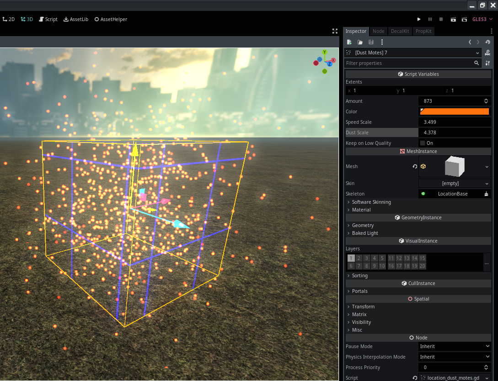

Module: location_dust_motes
Documentation last edited: October 23, 2025 at 14:33 UTC
Description
LocationDustMotes
is a node that creates dust motes in locations, provides pretty simple set of controls to make dust. You breathe the dust in and enjoy it.

This node is pretty configurable and properties should be self-explanatory. Keep in mind, this node is made solely for dust motes and nothing else. You can change the volume of emitted dust motes by changing
extents
property. I honestly regret that I've made it this way, but it might as well be too late to change it for better (or is it?), I think it would've been better to actually scale the cube itself and just change the extents or actually just make particle itself adjust its scale to fit or something like this.
I hope you enjoy your weather.
General Information
Root directories list
assets, docs, src
Nodes
Classes
None
Resources
None
Other Scripts
None